Atlas Motion Systems · Research
Every RL policy trains against an actuator model, and the industry default is fiction. We A/B tested fiction against physics on a quadruped and a humanoid: the humanoid trained on fiction falls in 4,554 of 4,554 episodes on real motor physics; trained on our model, it walks with zero falls. The same model closes the loop the other way: hardware choices graded by the policies they produce, before the hardware exists.
Every RL policy trains against some model of its actuators. The industry default is a PD controller with a torque clamp: thirty newton-meters, instantly, at any speed, forever. A real motor ramps current through inductance, loses torque with speed, and derates with heat. The policy rehearses habits the hardware cannot honor, 150 million steps at a time.
Atlas builds actuator design tools, and a finished design already contains every number a
faithful simulation needs. So we built atlas_actuators,
an open-source Isaac Lab plugin that turns any Atlas design into a physics-accurate training
actuator, and measured what the fantasy costs:
An actuator is not a motor. It is a motor, a gearbox, and a drive: power electronics plus a microcontroller that stand between every command and every motion. The motor is magnets on a rotor chasing currents in stator windings; making torque means steering those currents thousands of times per second as the rotor turns. That is the drive's job — field-oriented control at 20–40 kHz, converting "give me thirty newton-meters" into three precisely timed phase currents while watching current, rotor angle, and winding temperature. The gearbox trades the motor's speed for joint torque.
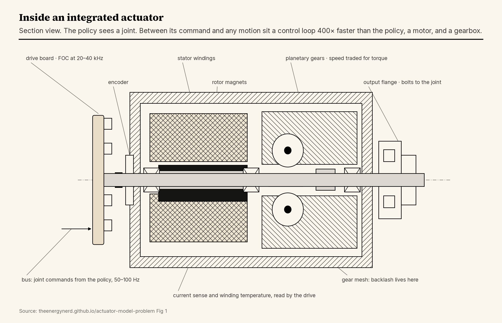
Integration is where the trouble starts. The robot's computer talks to each drive over a bus a few hundred times per second; the drive handles everything faster than that on its own. So when a simulator models "the actuator," it is modeling this entire closed-loop stack — motor physics, current controller, limits — and the default model throws all of it away in favor of a torque genie.
The one strong model in the toolbox is ETH's 2019 actuator net: hours of measured torque on their ANYdrive, distilled into an LSTM. It transferred famously, Isaac Lab ships it today, and it describes exactly one actuator, theirs. The method requires the hardware to exist first — so the model you need most, the one that decides whether a motor is worth building, is the one it structurally cannot produce.
A finished Atlas design knows its torque constant, resistance, inductance, current limits, and thermal resistances, which is everything needed to simulate what the drive's microcontroller will actually run: field-oriented control, current loop included. The part simpler models miss entirely is the price of torque at speed:
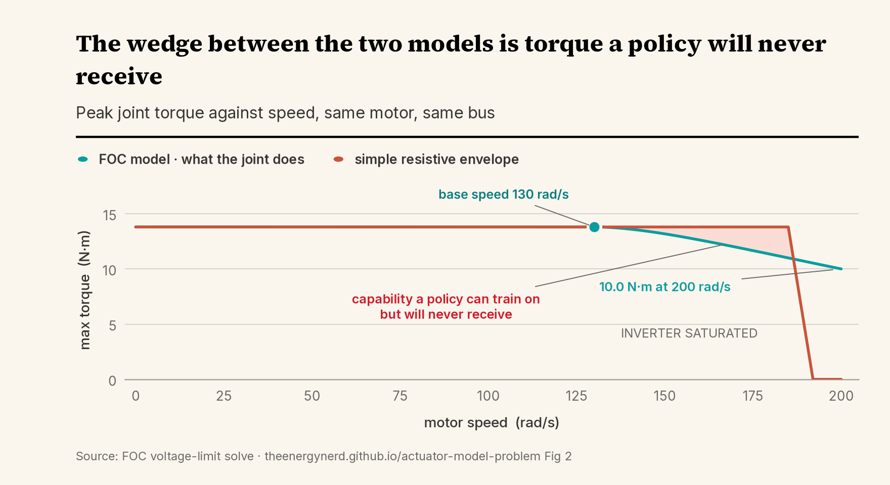
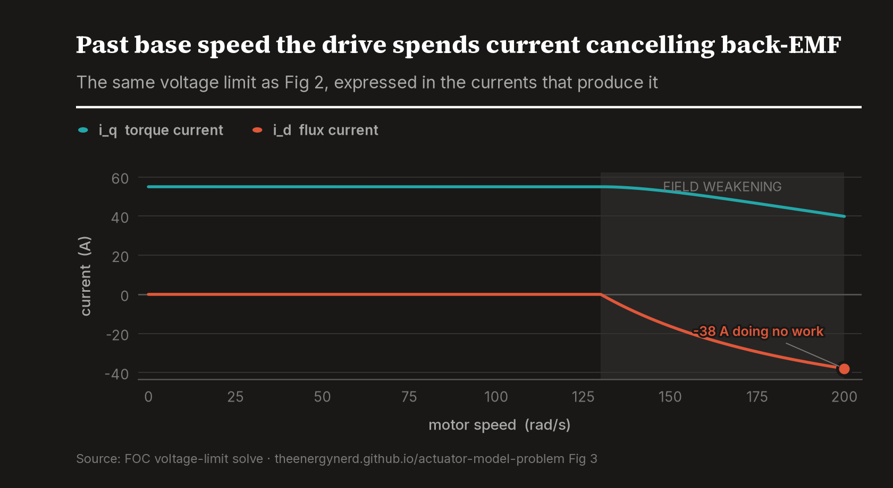
Two checks keep it honest: energy conservation closes to 0.00 percent, and the control law compiles to microcontroller C that replays against the simulation to within 1.1×10⁻⁶. The simulator and the firmware are the same law.
The plugin enters Isaac Lab through the same ActuatorBase socket as
ETH's network. One is distilled from measurements of a machine that exists. The other is
derived from the design of one that does not.
The quadruped is the controlled study: statically stable, so whatever the actuator swap changes is attributable to the model. ANYmal-C, identical everything, 1,500 iterations. Policy A trains on the stock actuator net, policy B on our FOC model. Both are evaluated on the FOC physics, which stands in for the robot you actually built.
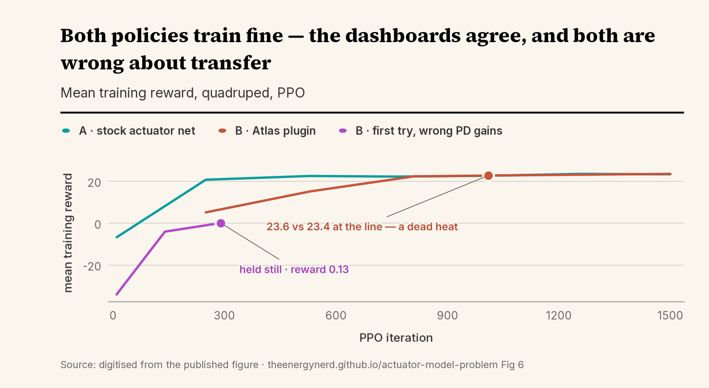
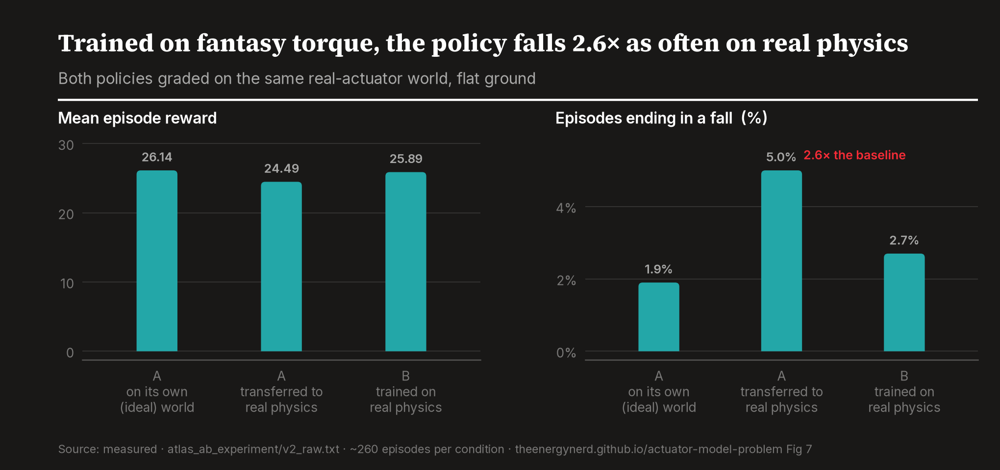
That was one seed, so we ran two more, fresh training and ~260-episode evals for every cell. The gap does not shrink; it was hiding its size. Transfer falls 5.0 / 6.3 / 5.8 percent across seeds 42/43/44 while the matched policy falls 2.7 / 0.9 / 1.5 — every seed shows the penalty, and the original 2.6x turns out to be the most flattering draw of the three. Own-world parity replicates too: 26.0 against 26.2 on average, with the matched policy's worst seed still within half a reward point of the baseline's best.
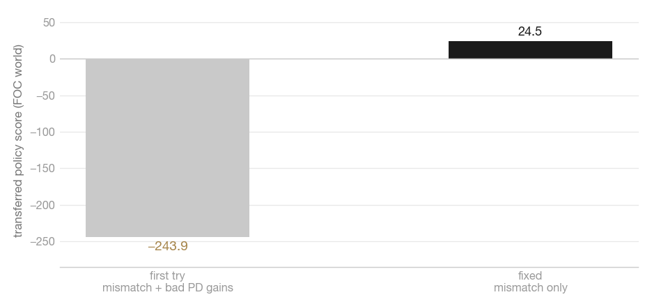
At steady cruise the two policies are measurably identical (tracking 0.97 versus 0.95, saturation ~0 percent): a loafing motor looks the same under any model, so cruise footage proves nothing. The gap lives in shove recovery, torque demanded at speed, exactly where Fig 2's curves separate. Could better training close it? We retrained both with ±2.0 m/s shoves:
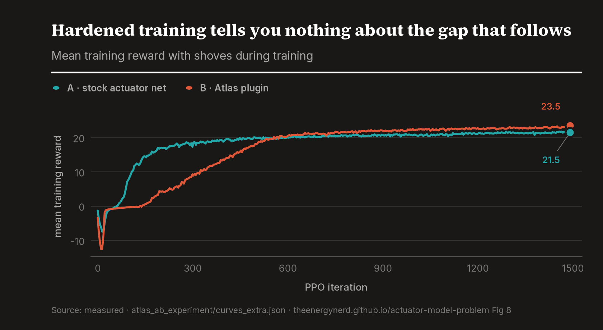
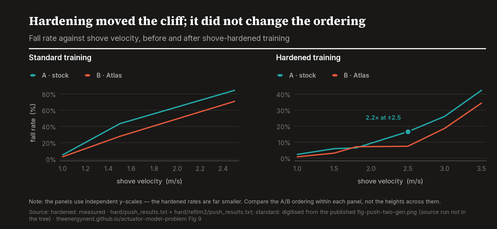
Hardware design has always been open-loop with respect to behavior: size the motor, build the robot, discover the truth months later, when the gearbox is glued into a leg. Software has iterated inside a compile-test loop for fifty years; actuators never had one, because grading hardware by the behavior it produces required the hardware to exist. A design-time actuator model breaks that dependency:
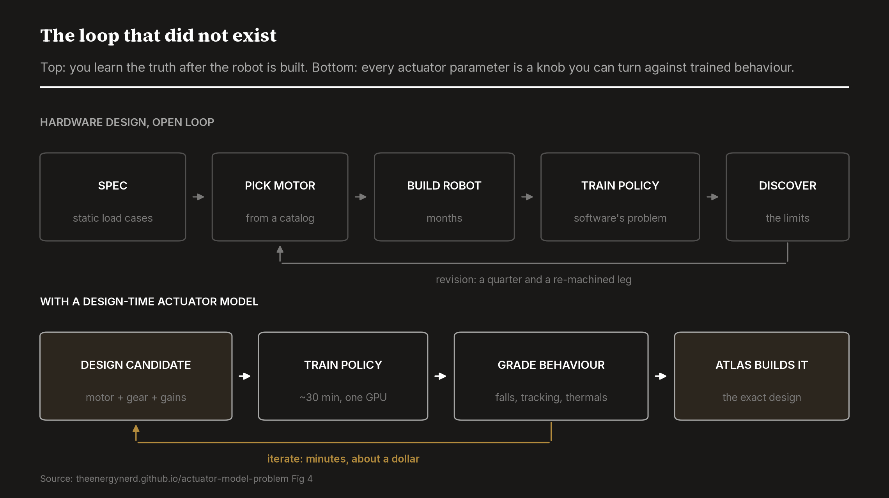
| hardware iteration | traditional | with a design-time model |
|---|---|---|
| one lap of the loop | months | ~30 minutes |
| cost per lap | a hardware revision | ~$1 of GPU time |
| behavior known | after the build | before the first part is machined |
| graded by | datasheet margins | falls, tracking, thermals of a trained policy |
| who iterates | mechanical engineering | anyone with a GPU |
The reason this loop terminates in something real is that Atlas is not a design tool with a simulator attached. We manufacture the actuator. A roboticist iterating in this loop is not sweeping abstractions; they are co-designing, with us, the exact unit that will arrive — its training twin already the spec sheet, its firmware already the law the policy trained against. Simulator vendors do not build motors. Motor catalogs do not ship training models. The loop only closes when the same party does both, and today that party list has one name on it.
We ran the loop on the gearbox — three ratios, one policy each, graded in their own worlds:
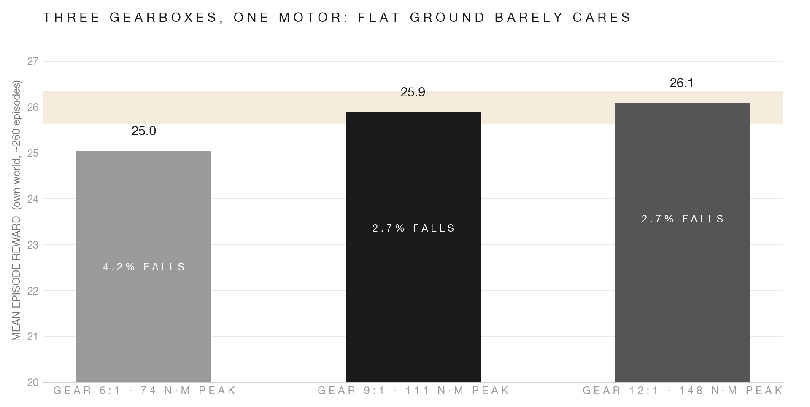
Then we took the sweep's own advice. The one-line change that makes the axis discriminate turned out to be the command range: 1 m/s becomes 2.5, and the tie breaks immediately. The 6:1 posts the highest reward and the most falls. The 12:1 gives back two reward points and buys a third fewer falls. And the 9:1, the compromise gear a datasheet would call the safe middle choice, loses to the 12:1 on both axes at once, less reward and more falls. Flat-ground cruise could not rank three gearboxes; three dollars of sprint could, and it eliminated the middle of the catalog.
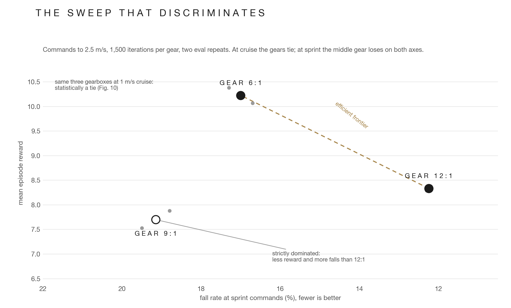
The loop runs the other way too. Hand-rescaling the humanoid's PD gains to the torque ratio, the sensible move, made everything worse: the optimizer, training through the real model, had already found a better operating point.
The last axis is the one no simulator models at all: heat. Every joint in our model carries a winding-temperature state, I²R in, Newton cooling out, and a derate that fades the current ceiling as the winding approaches its limit. We built a task where the constraint binds, two minutes of commanded sprinting on a thermal time constant of forty seconds, and trained the same warm-started walker twice: once blind, once with its twelve winding temperatures appended to the observation. The naive prediction is that the aware policy learns to slow down. It does not. It walks the same 1.7 m/s and runs its hottest winding eleven degrees cooler, spreading load across motors so no single winding becomes the fuse. The blind policy crosses into derate at thirty seconds and spends the rest of the episode there, falling 17 times to the aware policy's 4. Thermal load-balancing is not in the reward, not in the curriculum, and not in any spec we wrote. It is what gradient descent does with a temperature sense and a physics model honest enough to make heat cost something.
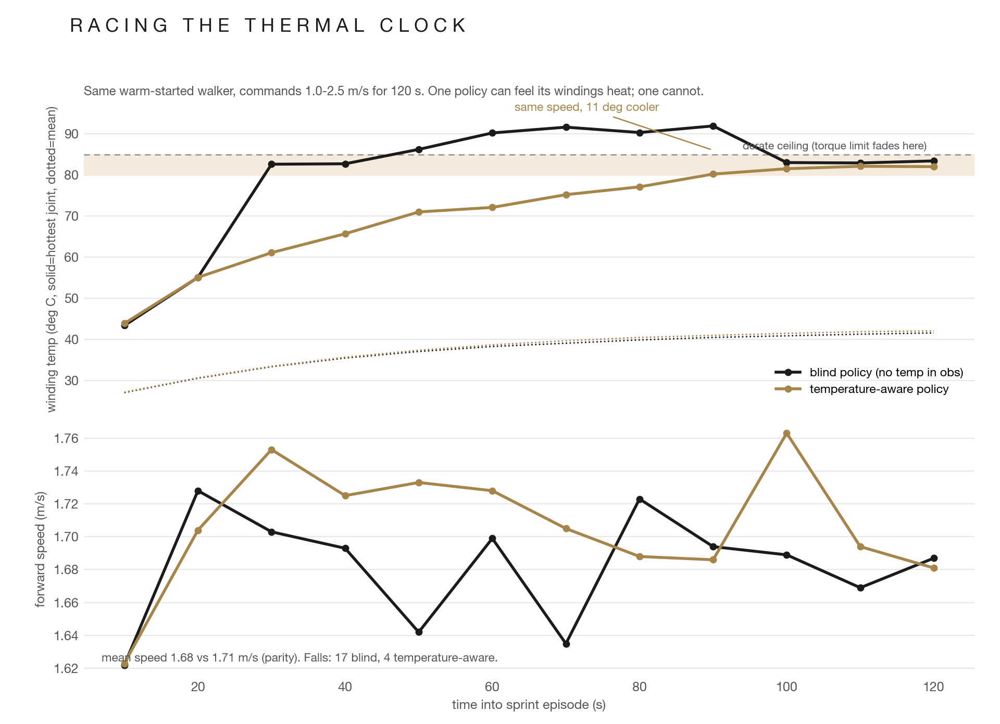
A quadruped stumbles onto its other legs; a humanoid balances or it does not exist. And its baseline is worse than idealized: the stock G1 task drives every joint at 300 N·m when the real knee peaks at 139 — marketed versus achieved, for torque, baked into every G1 policy that task has produced. Our variant gears one Atlas motor three ways (12:1 legs, matching the real knee; 2:1 ankles and arms) and changes nothing else.
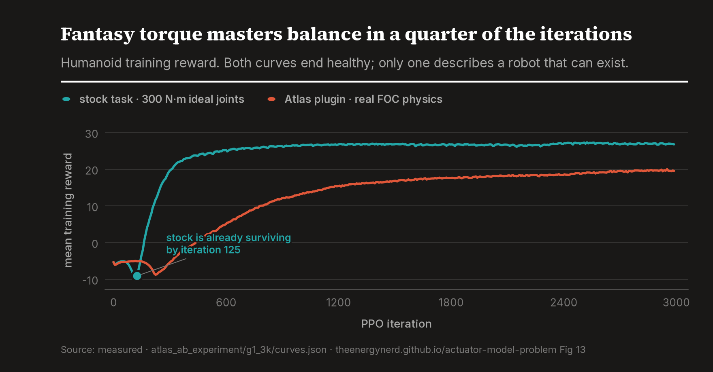
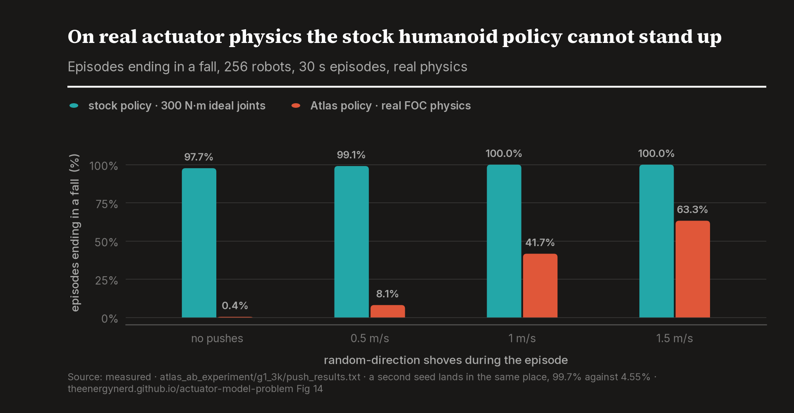
The gait chase became evidence. The stock reward is satisfied by a crouch, on any torque:
Getting the right-hand clip produced the sharpest finding here. The posture reward fixed the fantasy world on the first try; trained from scratch on real physics, it produced a policy that stands, perfectly stable, and never walks. Fantasy torque does not just distort the gait you get; it changes which behaviors are reachable.
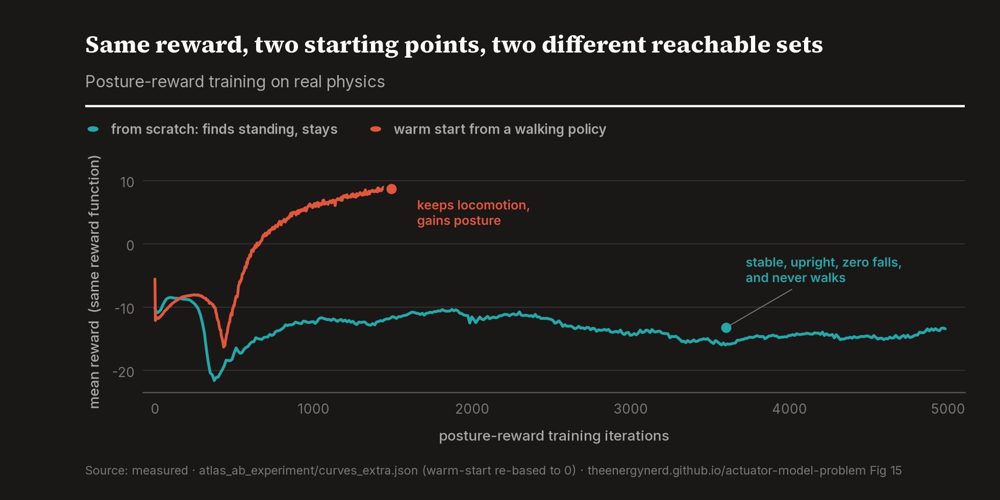
| policy | gait on real physics | falls, no pushes | falls, ±1.0 m/s |
|---|---|---|---|
| stock recipe, 300 N·m fantasy joints | cannot stand | 97.7% | 100% |
| Atlas model, stock reward, 3,000 iters | crouch shuffle | 0.4% | 41.7% |
| Atlas model, stock reward, 5,000 iters | crouch, confident | 3.5% | 21.3% |
| Atlas model, gains rescaled by hand | weak, hesitant | 1.9% | 56.8% |
| Atlas model, posture reward, from scratch | stands, never walks | 0.4% | 97.8% |
| Atlas model, posture reward, warm start | upright stride | 0.0% | 22.4% |
| + push curriculum (±1.0 in training) | upright stride | 0.0% | 0.4% |
| + encoder quantization and backlash | upright, degraded | 14.3% | 45.0% |
The last two rows close open loops. Training against shoves does for the humanoid what it did for the quadruped, and then some: 0.4 percent falls at ±1.0, one fall in 512 episodes. And the actuator model now includes two effects the actuator net used to hold over physics: a 14-bit motor-shaft encoder (velocity from finite differences of the quantized signal) and 8 mrad of gear play, modeled as a play operator whose gap traversal costs the physical fraction of a control step. Half a degree of backlash is not cosmetic: after 1,500 adaptation iterations it still costs 14.3 percent of unpushed episodes. Our first backlash model gated torque to zero for a full control step per reversal, ~10x the physical dead time, and collapsed the policy entirely; the film caught it, the arithmetic confirmed it, and the corrected model is the one reported. Watch the behavior. Do not trust the scalar.
The scaling law is uncomfortable: the quadruped pays mismatch as a 2x robustness tax, the humanoid pays it as nonexistence, and the industry is migrating from the forgiving platform to the unforgiving one.
On an ANYdrive, ETH's network is almost certainly more accurate; it absorbed friction and backlash that first principles miss. The right metric is transfer quality per dollar and week of characterization, and there the columns have opposite shapes:
| actuator net (ETH) | physics-from-design (Atlas) | |
|---|---|---|
| needs the hardware to exist | yes, plus a torque-instrumented rig | no |
| marginal cost per new actuator | weeks of collection and fitting | zero; it is a design output |
| captures friction, backlash, comm delays | yes, when the data covers them | backlash and encoder quantization now modeled from design parameters; friction and delays arrive through fleet telemetry, because we build the actuator and its firmware |
| extrapolates to a new bus voltage, a hotter winding, a gear swap | silent; it never saw that data | answers from physics |
| thermal state, temperature-aware policies | none | winding temperature per joint, observable by the policy |
| auditable | black box | every parameter is a design quantity; energy-balance checked |
| doubles as the deployed controller | no; a simulation-only artifact | the same law compiles to the drive firmware, at 1e-6 parity |
The approaches compose: the endgame is a learned residual on a physics prior, and it belongs to whoever builds the actuator. ETH needed a rig to characterize someone else's black box from outside. We are inside, where measuring commanded against delivered torque at 20 kHz is just what FOC does. ETH characterized one actuator, once. A fleet that ships with its own characterization loop does it continuously, and every residual flows back into the training twin.
As robots get more neural, does the engineered actuator layer matter less? It becomes the most important layer on the robot, for three reasons, and the third has no counterargument.
The physics floor does not move. Policies run at 50–100 Hz; commutation runs at 20–40 kHz with hard real-time guarantees. No network does it, and no gradient makes it worth trying. The more the stack neuralizes, the more this is the only engineered interface left.
Every policy trains against an actuator model; the only question is whose. In a hand-tuned world a datasheet model was fine, the engineer compensated. In an RL world the model is the product interface. RL does not route around your characterization data. It consumes it.
A learned policy cannot be the safety layer. Thermal limits, overcurrent, joint limits, sanity when the policy outputs garbage: these need guarantees, and networks do not issue them. That layer lives in firmware — in our case the same law the simulation runs. The thing that protects the hardware, the thing the policy trains against, and the thing that ships are one object.
Today those three floors belong to three vendors plus glue, and the sim-to-real gap is the seam where the glue fails. Atlas's position: one surface. We design and manufacture the motor, the same computation produces the training twin, the firmware is the identical law, and every deployed unit feeds telemetry back into the model every future policy trains against.
One dict, five layers, one command (python atlas_full_stack_demo.py, three
seconds, no GPU):
| layer | what it does | verification |
|---|---|---|
| design | specification to motor: generator, FEA, thermal, CAD | predictors calibrated on published measured motors |
| control | FOC loop gains computed from Kt, R, L, and J | 4/4 physics checks, energy balance 0.00% |
| program | knee.move_to(1.2, max_torque=12), clamped to the true envelope | settles at 1.198 of 1.200 rad under load |
| firmware | the same law emitted as microcontroller C | replayed against the sim, parity 1.1e-6 |
| train | the same dict as the Isaac Lab actuator above | in-sim torque clamp equals the analytic value |
Three seeds on the quadruped, two on the humanoid, one each on the hardware-effects and thermal results; the splits are large enough that more seeds would sharpen error bars, not conclusions. The model keeps growing where the data arrives: gear friction and bus latency land with fleet telemetry, and the backlash operator graduates from first-order play when a real gearbox gets measured. Which is the next artifact: a drive board, a motor, and a load cell, ~$300 in parts, the emitted firmware flashed unmodified, and the measured torque-speed curve laid over Fig 2. That plot settles the argument in whichever direction it chooses.
The plugin is open source: github.com/TheEnergyNerd/atlas-actuators (MIT), with every trained checkpoint behind the numbers above attached to the v0.1.0 release.
# the whole chain, no GPU: design → control → program → firmware → Isaac cfg python atlas_full_stack_demo.py # the RL experiment: Isaac Lab + the atlas_actuators plugin, one GPU ./isaaclab.sh -p train.py --task Isaac-Velocity-Flat-Anymal-C-AtlasFOC-v0 --headless # hardened curriculum + the humanoid ./isaaclab.sh -p train.py --task Isaac-Velocity-Flat-Anymal-C-AtlasFOC-Hard-v0 --headless ./isaaclab.sh -p train.py --task Isaac-Velocity-Flat-G1-AtlasFOC-v0 --headless
Myana, P. (2026). The Actuator Model Problem: Physics-Accurate Actuator Models for Reinforcement Learning. Technical Report, Atlas Motion Systems. https://theenergynerd.github.io/actuator-model-problem/
@techreport{myana2026actuatormodel,
author = {Myana, Pranav},
title = {The Actuator Model Problem: Physics-Accurate Actuator
Models for Reinforcement Learning},
institution = {Atlas Motion Systems},
type = {Technical Report},
year = {2026},
month = {July},
url = {https://theenergynerd.github.io/actuator-model-problem/},
note = {Isaac Lab plugin \texttt{atlas\_actuators}; quadruped and
humanoid actuator-model A/B experiments}
}